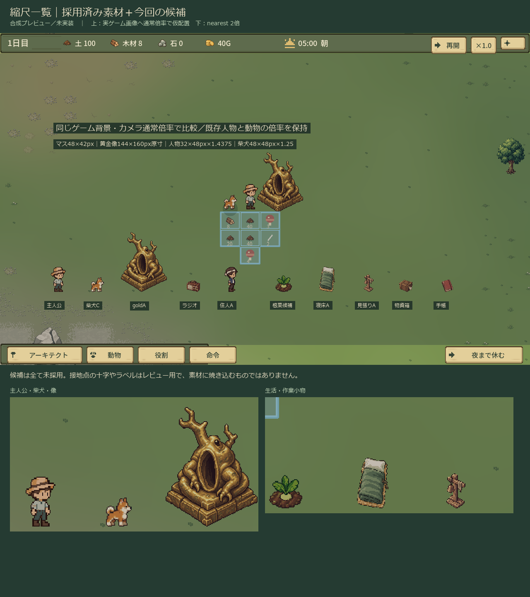

A1 古いラジオ
Aを推奨。既存の木・生成りと馴染む。Bは丸いスピーカーが読みやすい。
放送中の音波は控えめで静止画だけだと差が小さい。採用後は緩い2コマか明るさ変化を比較。
合成プレビュー／未実装。正式採用・ゲーム動作確認の資料ではありません。
Aを推奨。既存の木・生成りと馴染む。Bは丸いスピーカーが読みやすい。
放送中の音波は控えめで静止画だけだと差が小さい。採用後は緩い2コマか明るさ変化を比較。
元のgoldA＋独立オーバーレイを推奨。顔・形・模様は再生成していない。
軽い損傷は装飾に埋もれやすい。台座に絞り、影からはみ出ないよう補正した。夜の視認性は実装後に確認が必要。
腕と道具を同じ姿勢として接続する方向を推奨。顔・帽子は主人公v1の画素を復元。
振りかぶり試作は腕が不明瞭なので未採用。今回は命中のみ。現在コード工具の再現との比較であり、実際のジョブを動かした証拠ではない。
素朴な布表紙の手帳と折り目の手紙を用途別に推奨。緑＋金の図鑑と区別。
小物単体に新しい本文、記号、文明や結末を固定しない。読書用紙面の寸法は未決。
Aを推奨。主人公の帽子と柴犬の暖色に対して、小さくても識別しやすい。
A/Bとも成人の作業者候補。髪型・顔は新人物案であり加入人物の採用を意味しない。Bは草色に馴染みすぎる。
B配置を推奨し、境界の不規則さはA程度に留める。作物は淡色根菜の候補1種。
Aは隣の状態が重なって読みにくい。初稿の2px差が弱かったため不規則な土の連なりを追加し比較。5見本は5論理状態の要求ではない。
最初はAを推奨。Bは家具として分かりやすく屋内向き。
休息ゾーンは既存の範囲表示であり寝具ではない。既存休息・睡眠コマを寝床へ直接重ねると向きが合わない可能性。
A標識＋三角アイコンを推奨。鐘形は施設との対応、三角は警戒状態の識別に強い。
後段P10向けのスケッチ。見張り塔・自動レーダー・敵位置マーカーではない。正式な造形仕上げは保留。
Aカードを推奨。どの箱に対する選択か分かる。Bは見落としを減らす用途向き。
木箱は小さいと木材現物に近づくため無地札を太く補正。数量・中身の表示を加える場合は動的UIにする。
